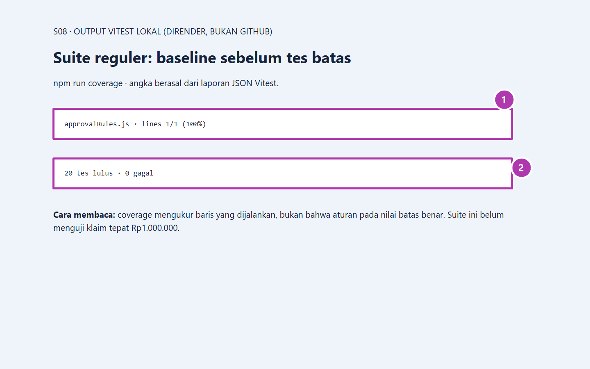
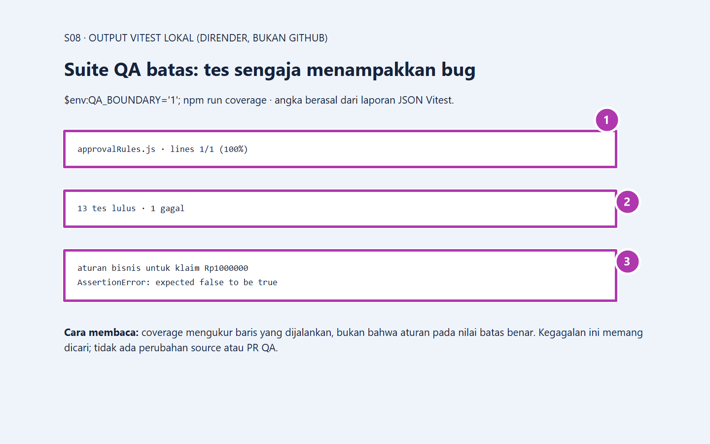
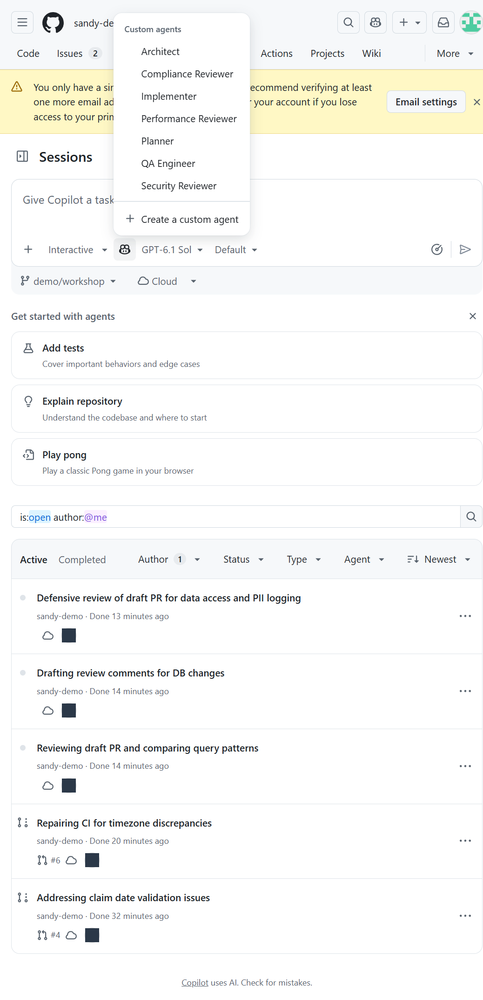
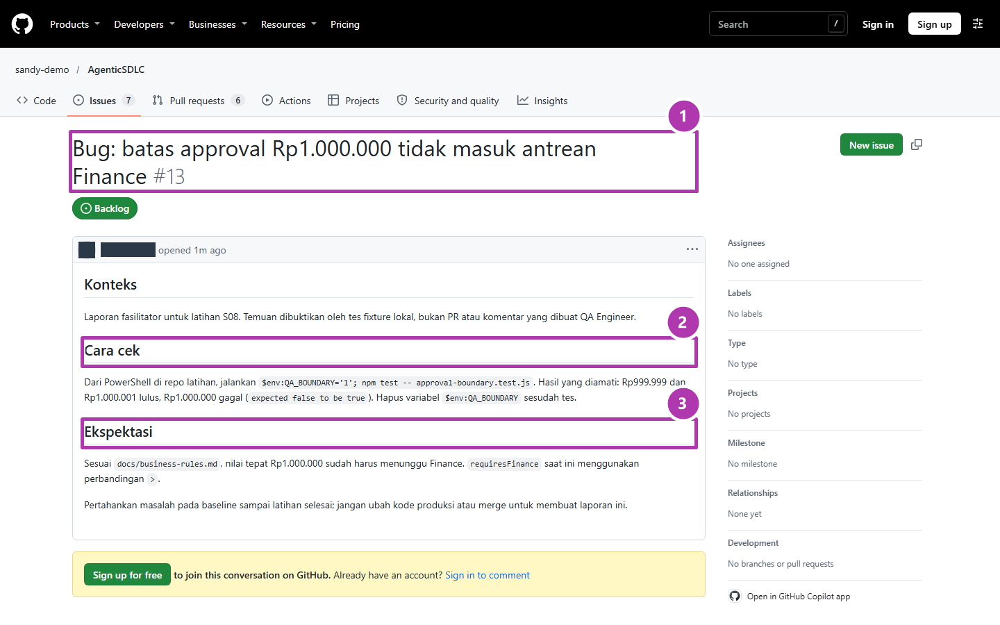
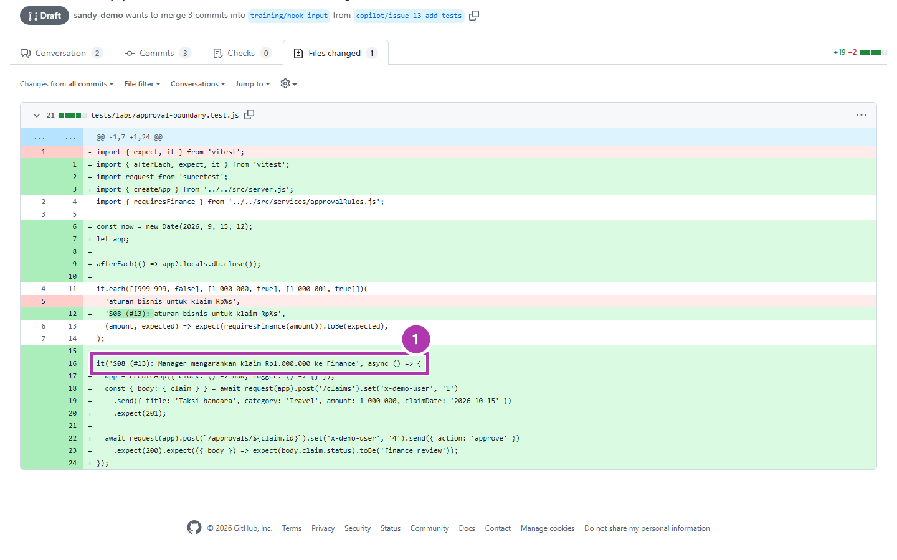
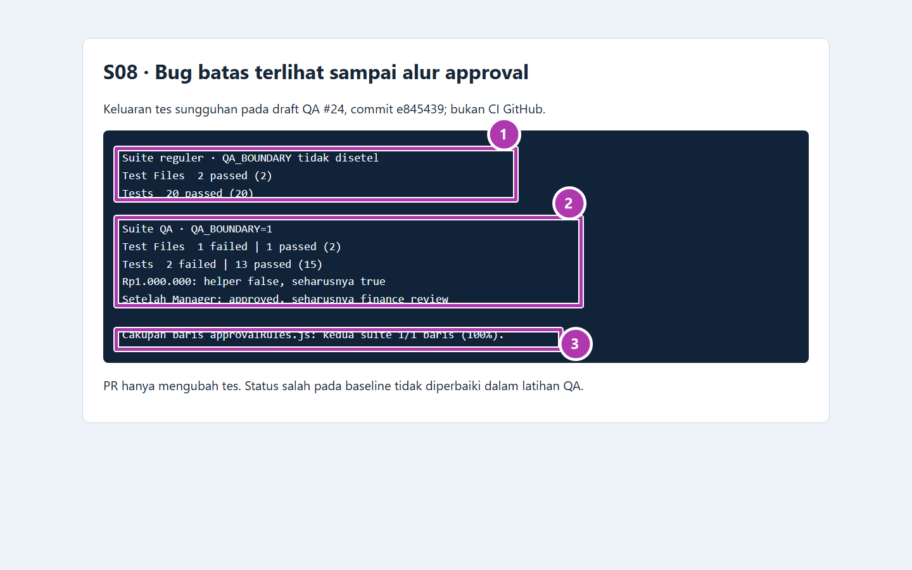
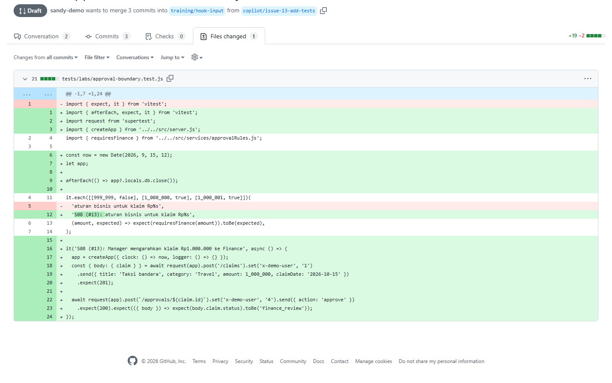

S08 · Level 3 — Tim virtual
QA menemukan bug tepat di batas
Minta profil QA Copilot menguji angka di bawah, tepat di batas, dan di atas Rp1.000.000. Catat kasus yang gagal dan buat laporan bug; perubahan kode produksi bukan bagian dari draft QA.
Status latihan: Draft QA #24 hanya menambah tes. Dua tes membuktikan masalah pada Rp1.000.000; aturan produksi belum diperbaiki.. Lihat diagram interaksi · Ikuti langkah · Cek hasil · Langkah live · Ulangi dari awal.
Masalah yang dihadapi
Sari menguji klaim Rp999.999 dan Rp1.000.000. Yang pertama cukup lewat Manager. Yang kedua harus lanjut ke Finance setelah Manager, tetapi di aplikasi awal keputusan Manager saja sudah cukup.
Kerugian: Klaim tepat di batas bisa disetujui tanpa pemeriksaan Finance meski tes umum terlihat lulus.
Masalah pada baseline
src/services/approvalRules.js
Lihat potongan atau catatan sumber
return amount > 1_000_000; // aturan yang benar: ≥.Solusi dan alur
Minta profil QA Copilot menguji angka di bawah, tepat di batas, dan di atas Rp1.000.000. Catat kasus yang gagal dan buat laporan bug; perubahan kode produksi bukan bagian dari draft QA.
Alur kerja ringkas
Sari (QA)Siapkan tiga nilai batas
Hasil: Rp999.999 cukup lewat Manager. Rp1.000.000 dan Rp1.000.001 harus lanjut ke Finance.
TesPeriksa hasil setelah Manager
Hasil: Dua tes menemukan masalah pada Rp1.000.000: versi awal bisa menandai Disetujui sebelum Finance.
ReviewerLaporkan bug, bukan patch
Hasil: Draft QA #24 hanya menambah tes. Tiket #13 mencatat bug; aturan aplikasi belum diperbaiki.
Diagram interaksi
Buktikan alur salah tepat pada Rp1.000.000.
Uji batas, bukan memperbaiki kode aplikasi
-
Sari (QA)GitHub / VS Code keQA EngineerProfil Copilot
-
QA EngineerProfil Copilot keTes QATerminal lokal
-
Tes QATerminal lokal keAPI Expense ClaimAplikasi lokal
-
API Expense ClaimAplikasi lokal keTes QATerminal lokal
-
Tes QATerminal lokal keSari (QA)GitHub / VS Code
Langkah demo
Yang kamu lakukan
- Di repo latihan, pilih Issues → New issue dan tulis aturan Rp1.000.000. Di GitHub Agents pilih qa-engineer jika tersedia, lalu arahkan ke tiket. Minta tes saja, bukan perubahan aturan aplikasi.
- Uji Rp999.999, Rp1.000.000, dan Rp1.000.001. Cari apakah tepat Rp1.000.000 melewati Finance. Di Files changed, pastikan perubahan hanya di tes.
- Catat hasil yang terjadi dan yang seharusnya di laporan bug. Tes yang sengaja gagal adalah bukti; jangan menyetujuinya sebagai perbaikan produk.
Issue adalah tiket kerja. PR (pull request) adalah usulan perubahan; jika masih draft, hasilnya belum digabung. Files changed atau Changes menunjukkan file yang berubah. Checks menunjukkan hasil tes otomatis.
Ikuti alur GitHub dari tiket sampai review jika latihanmu memakai PR. Tautan contoh di bawah hanya membuka hasil yang sudah ada.
Contoh dan cara cek hasilnya
Ukur suite reguler
Jalankan Vitest coverage. Catat baris approvalRules.js saja, bukan coverage seluruh aplikasi. Bandingkan hasil dengan tabel di bawah; cakupan baris tinggi bukan jaminan batas benar.
npm run coverage
Perbesar S08-before-annotated.pngOutput uji lokal yang dirender · 1. Coverage approvalRules.js adalah 1/1 baris (100%). · 2. Suite reguler di ref panduan: 20 tes lulus. Kesimpulan ini belum menguji tepat Rp1.000.000. Bandingkan aturan bisnis dengan tiga nilai uji
Di bawah Rp1.000.000 cukup lewat Manager. Tepat di batas dan di atasnya perlu Finance. Jalankan tes batas: kasus tepat Rp1.000.000 gagal pada versi awal karena pengecekan hanya menerima nilai lebih besar.
Baca aturan bisnis persetujuan
$qaWas = $env:QA_BOUNDARY try { $env:QA_BOUNDARY='1' npm run coverage } finally { $env:QA_BOUNDARY=$qaWas } # Exit nonzero pada fixture adalah hasil yang dicari; cek Rp1.000.000.
Perbesar S08-local-qa-coverage-annotated.pngOutput uji lokal yang dirender · 1. Satu baris masih tercakup (100%), sama seperti sebelum fixture. · 2. Hasil suite QA: 13 lulus, 1 gagal. · 3. Lihat Rp1.000.000: expected false to be true. Yang terbukti gagal adalah aturan di batas, bukan pengukur coverage. Delegasikan laporan QA, bukan patch produksi
Pilih profil qa-engineer bila tersedia. Minta tes di bawah, tepat pada, dan di atas ambang. Draft PR #24 menunjukkan hasil yang bisa diperiksa: tes bertambah, aturan produksi tetap sama.
Lihat tes batas di draft PR #24
Uji approvalRules.js sesuai docs/business-rules.md. Tulis tes di bawah, tepat pada, dan di atas Rp1.000.000. Laporkan bug; jangan edit produksi.
Perbesar S08-01-agent-picker.pngSumber GitHub · Di Agents, klik ikon Copilot di bawah kotak prompt untuk membuka Custom agents. QA Engineer muncul di daftar. Foto ini hanya menunjukkan pilihan; sesi QA belum dijalankan. Cocokkan laporan bug dengan hasil tes
Tiket #13 adalah laporan fasilitator untuk klaim tepat Rp1.000.000. Draft PR #24 menambah bukti berupa tes, bukan perbaikan aturan. Lihat apakah laporan menyebut hasil yang terjadi dan yang seharusnya.
Baca laporan bug batas persetujuan #13

Perbesar S08-02-bug-issue-annotated.pngSumber GitHub · 1. Buka Issues → #13. Laporan dibuat fasilitator, bukan QA Engineer otomatis. · 2. Jalankan fixture batas: Rp999.999 dan Rp1.000.001 lulus; tepat Rp1.000.000 gagal. · 3. Bandingkan dengan aturan bisnis: nilai tepat di batas sudah harus ke Finance. Buktikan dampak bug sampai ke API
Draft #24 hanya menyentuh tests/labs. Kasus tambahan mengirim klaim Rp1.000.000, lalu Manager menyetujui. Finance seharusnya menerima antrean tetapi status aktual approved. Ini bukti yang lebih kuat dibanding hanya coverage.
Lihat tes API pada draft QA #24

Perbesar S08-qa-pr-annotated.pngSumber GitHub · 1. Cek kasus integrasi pada batas Rp1.000.000; verifikasi draft hanya menyentuh tests/labs.


Cek hasil
Pada commit e845439, suite biasa 20 lulus; QA 13 lulus dan dua gagal pada ambang yang sama. Coverage approvalRules.js 1/1 pada kedua mode. Issue #13 tetap laporan; root bug produksi sengaja tidak diubah di lab QA.
Bukti latihan terverifikasi


Perbesar S08-after-annotated.pngLangkah live
Prasyarat dan petunjuk pengambilan bukti
Issue #13 dibuat fasilitator dari tes yang benar-benar gagal, bukan laporan otomatis agent. Untuk jalur live, gunakan QA Engineer dan PR test-only pada branch latihan dengan runner siap.
Tidak ada target bukti live yang belum direkam.
Sebelum dan sesudah
Geser pembanding atau gunakan tombol panah pada kontrol. Kedua gambar bisa dibuka terpisah.


| Bagian | Sebelum | Sesudah / target |
|---|---|---|
| Perilaku | Suite reguler melewati baris approvalRules.js tetapi tidak menguji tepat Rp1.000.000. | Tes batas memakai nilai 999999, 1000000, 1000001. Hanya input tengah gagal: expected true, actual false. |
| Bukti visual | Ada tangkapan lokal. | Ada tangkapan lokal. |
| Keputusan | Peserta membaca keadaan awal. | Manusia memeriksa hasil sebelum meneruskan. |
C3 · Coverage baris approvalRules.js
| Kategori | Coverage (%) |
|---|---|
| Suite validasi | 100 |
| Ditambah tes batas | 100 |
Manfaat
- QA mengubah aturan tertulis jadi bukti yang bisa diulang.
Bukti dan sumber
Template issue S08 · Data latihan dan pengukuran.
 Perbesar S08-local-result.png
Perbesar S08-local-result.pngBukti GitHub live
Draft #24 test-only dan issue #13 memberikan bukti QA. Angka awal yang salah dikoreksi melalui hasil 100%/100% yang diukur pada kedua mode.


Perbesar S08-qa-pr.pngUlangi latihan
Pemeriksaan tidak menulis kode atau data remote. Ulangi perintah di terminal baru bila sebelumnya mengubah variabel lingkungan.
npm run reset -- --fresh